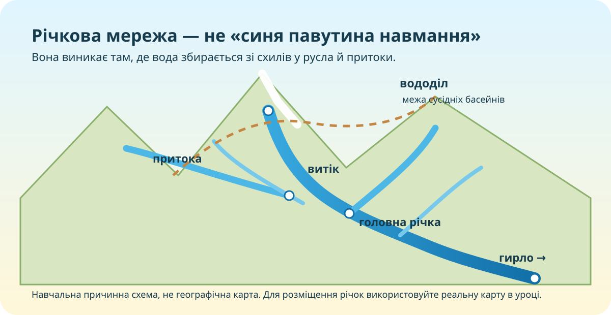

Чому на заході річок видно більше, ніж у посушливому степу?
Запишіть гіпотезу до роботи з картою. Помилкова гіпотеза — нормальна. Неперевірена — вже просто думка.

Спочатку дивимось на територію, а не на визначення

Річка, притока, система, басейн: не плутаємо рівні
Природний водний потік у сформованому руслі.
Річка, що впадає в іншу річку.
Головна річка разом з усіма її притоками.
Територія, з якої вода стікає до цієї річкової системи.
Інтерактив: зберіть правильний причинний ланцюг
Звідки річка бере воду протягом року?
Для більшості річок України характерне змішане живлення: снігове, дощове та підземне. Їхня частка змінюється за сезонами й регіонами.
Мінікейс
Сценарій: сніжна зима → швидке весняне потепління → одночасне танення снігу у водозборі.
Навіщо людині розуміти річкову мережу?
🚰 Водопостачання
Річки й водосховища забезпечують населення та господарство водою.
🌾 Сільське господарство
Вода потрібна для зрошення, але надмірний водозабір змінює стік.
⚡ Енергетика
Гідроенергетика залежить від стоку, перепаду висот і режиму річки.
🏙 Розселення
Багато міст формувалися біля водних шляхів і джерел води.
🌿 Екосистеми
Заплави, болота й русла підтримують біорізноманіття та очищення води.
⚠️ Ризики
Повені, паводки й маловоддя впливають на інфраструктуру та водну безпеку.
Збираємо модель у 6 тез
Візуальна перевірка
Дивіться не пасивно
Під час перегляду випишіть:
- одну назву великої річки;
- один чинник її режиму;
- один приклад значення для людини.
Тест: 10 завдань = 10 балів
Спочатку введіть дані учня.
Фінальний доказовий висновок
Claim: сформулюйте тезу про головні чинники річкової мережі України. Evidence: наведіть 2 конкретні докази з карти/уроку. Reasoning: поясніть механізм зв’язку.
Домашня мініекспедиція
- Опрацюйте тему про річкову мережу України в електронному підручнику 8 класу.
- Оберіть одну річку своєї області або річку, яку добре знаєте.
- Запишіть: витік/район витоку, куди впадає, 2 притоки або водні об’єкти басейну, тип живлення, один спосіб використання людиною.
- Складіть короткий CER: який природний чинник найбільше визначає характер цієї річки?
Якщо джерела суперечать одне одному — не усереднюйте навмання. Запишіть, у чому саме різниця.